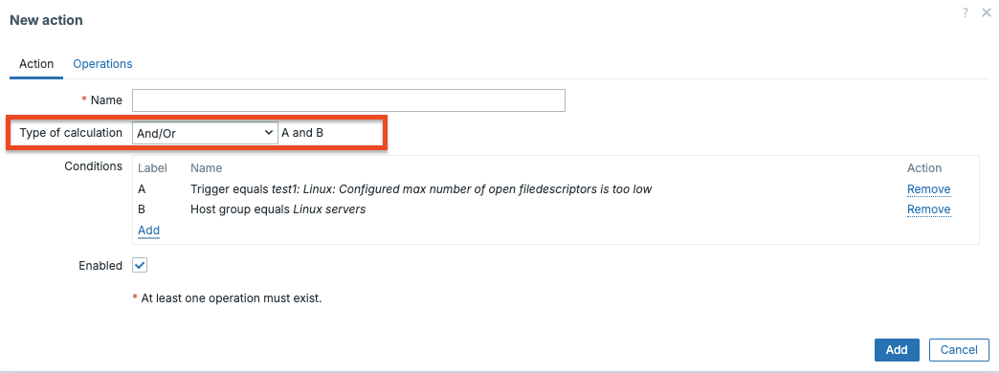
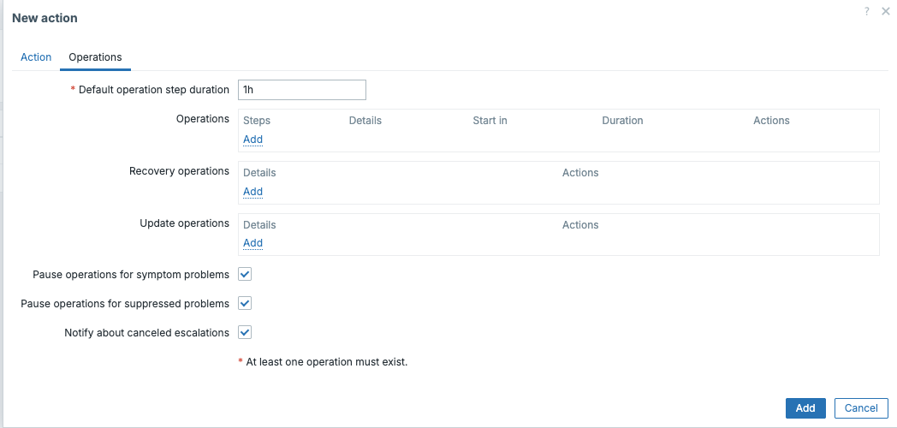

Actions
Actions are the automated response engine of Zabbix. Whenever something happens in your monitoring environment, a trigger fires, a new host is discovered, an active agent registers itself, an item goes unsupported, or a service changes status, Zabbix can respond automatically. Actions define both when to respond (conditions) and what to do (operations).
Understanding actions deeply is one of the things that separates a Zabbix power user from someone who just installed the product. The configuration surface is large, the interaction between escalations and recovery is subtle, and a number of behaviours only become clear once you know where to look.
This chapter covers all five event sources that can drive an action in Zabbix 8:
- Trigger actions: the most common type, responding to problem events raised by triggers
- Discovery actions: responding to hosts and services found by network discovery rules
- Autoregistration actions: responding to active Zabbix agents that register themselves
- Internal actions: responding to Zabbix's own internal state changes (unsupported items, unknown triggers)
- Service actions: responding to changes in the status of business services
What Makes Up an Action
Every action, regardless of its event source, shares the same three-part structure:
- Name and enabled/disabled toggle: actions can be switched off without deleting them, which is useful during maintenance windows or when testing a new alerting design
- Conditions: a set of filters that determine whether the action should fire for a given event
- Operations: what to actually do: send a message, execute a command, or manipulate a host
Trigger actions additionally have Recovery operations (what to do when the problem resolves) and Update operations (what to do when someone acknowledges or comments on the problem). Internal actions also support recovery operations.
You can reach all action types from Alerts → Actions in the left-hand menu.
Each event source has its own tab: Trigger actions, Service actions,
Autoregistration actions, Internal actions, and Discovery actions.
Event Lifecycle: Problem, Update, and Recovery
Before diving into configuration, it is worth understanding how Zabbix structures events internally. Every action operation is tied to a specific event type, and confusing them is one of the most common reasons people can't figure out why a notification isn't arriving, or is arriving when it shouldn't.
The Three Event Types
-
Problem event: Generated when a trigger transitions from
OKtoPROBLEM. This is what kicks off the escalation chain. Every problem event gets a unique event ID. All operations, including escalation steps, are executed in the context of this single event. -
Update event: Generated whenever a problem is modified without resolving. This includes acknowledgements, manual severity changes, comments, and suppression/unsuppression. Update events are linked to the original problem event by its event ID. Update operations in an action respond to these.
-
Recovery event: Generated when a trigger returns from
PROBLEMtoOK. This is also linked to the original problem event ID. Recovery operations fire once, at this moment — they do not escalate.
What This Means in Practice
A single trigger problem generates at most one problem event, potentially many update events, and at most one recovery event. Operations in the problem section of an action run against the problem event. Operations in the recovery section run against the recovery event. Operations in the update section run against update events.
This has an important consequence that surprises many users: if the same trigger fires again after recovering, a brand-new problem event is created with a new event ID, and the escalation starts over from step 1. There is no memory of the previous escalation. Each problem lifecycle is independent.
Conversely, if a problem never recovers (the trigger stays in PROBLEM state),
the escalation continues indefinitely through its steps — but there is still only
one problem event. The escalation is just advancing through the configured steps
against that single event.
Note
Operations within an escalation run once per step. You cannot make step 1
fire twice against the same problem event. If you need repeated notifications
at a fixed interval, configure multiple steps (or use steps 3–0 to repeat
indefinitely from a certain point onward).
Conditions
Conditions are the gatekeeping layer. An action's conditions are evaluated against each event, and only if the conditions pass does the operation execute. If you define no conditions at all, the action fires for every event of that source type, which is occasionally intentional but usually unwise in a large environment.
Type of Calculation
When you add more than one condition, Zabbix needs to know how to combine them. The Type of calculation field gives you four options:
| Option | Meaning |
|---|---|
AND / OR |
Conditions of the same type are combined with OR; conditions of different types are combined with AND |
AND |
All conditions must be true |
OR |
Any single condition being true is enough |
Custom expression |
You write a logical formula using condition labels (A, B, C…) |
The AND / OR default is often misunderstood. Concretely: if you add two Host
group conditions, Host group = Linux servers and Host group = Database servers;
then Zabbix evaluates them as "host is in Linux servers OR Database servers".
If you then also add a Trigger severity condition of >= High, the full
expression becomes "(host is in Linux servers OR Database servers) AND
severity >= High". This is logical and efficient for most alerting designs.
The Custom expression mode gives you full control. Conditions are labelled A,
B, C, D and so on as you add them, and you write the formula yourself. For example:
(A or B) and C and not D. Use this when the default AND/OR logic does not produce
the correct result.

CH07 type of calculation
Note
Condition labels are assigned in the order conditions were added. If you delete a condition, the labels do not renumber — the formula must reference the correct remaining labels.
Condition Evaluation Order and Grouping
Understanding evaluation order matters when building complex conditions. Zabbix
evaluates conditions in the order they appear in the list. With AND / OR
calculation, the grouping logic is:
- All conditions of the same type (e.g. all Host group conditions) are
evaluated first and combined with
OR - The resulting groups are then combined with
ANDacross different types
This means two conditions of the same type will never both be required
simultaneously under AND / OR mode. If you add Host group = A and
Host group = B, Zabbix reads this as "host is in A or in B" — not "host
is in both A and B simultaneously" (which would never match anyway).
If you genuinely need "Host is in group A and also in group B", switch to
AND mode or use Custom expression. Though for host group membership,
the more practical approach is usually a tag-based condition instead.
Condition Operators
Depending on the condition type, the available operators vary. String based conditions (trigger name, host name, tag value, host metadata) support:
=and<>(equals / does not equal)containsanddoes not contain(substring match, case-insensitive)matchesanddoes not match(regular expression)
Numeric conditions (severity, discovery uptime/downtime) support: =, <>, >,
>=, <, <=.
The matches operator uses POSIX extended regular expressions, the same engine
used elsewhere in Zabbix.
Trigger Actions
Trigger actions are what most people think of when they hear "action" in Zabbix.
They respond to problem events, moments when a trigger changes from OK
to PROBLEM and they are the foundation of any meaningful alerting setup.
Condition Types for Trigger Actions
| Condition type | Notes |
|---|---|
| Host group | Matches the host's direct group membership (nested groups are not automatically included) |
| Host | Exact host match |
| Trigger | Exact trigger match |
| Trigger name | String match on the trigger display name |
| Trigger severity | Compares with the trigger's configured severity |
| Trigger tag | Matches a tag name and optionally a tag value |
| Time period | A Zabbix time period string such as 1-5,08:00-18:00 (Monday–Friday, 8am–6pm) |
| Problem is suppressed | Whether the problem is currently suppressed (in maintenance) |
| Host inventory field | Match against any host inventory field |
Tip
The Trigger tag condition is extremely powerful in combination with templates.
If all your database templates tag their triggers with component: database,
you can write a single action that routes database alerts to the DBA team
without maintaining a list of specific triggers or host groups.
The "Pause Operations for Suppressed Problems" Option
At the top of the action form there is a checkbox labelled Pause operations for suppressed problems. When this is enabled (which it is by default), Zabbix will not send notifications for problems that are currently suppressed. For example, because the host is in a scheduled maintenance window. Crucially, the escalation does not restart from the beginning once maintenance ends; it resumes from where it was paused. This prevents a flood of "catch-up" notifications after a maintenance window closes.
If you disable this option, notifications fire regardless of maintenance status. This is occasionally useful for infrastructure teams who want to receive all alerts even during planned work.
Operations and Escalations
This is where most of the complexity lives. Each operation in a trigger action has:
- Steps: which escalation step this operation should fire on (e.g., step 1, or steps 2–4, or 3–0 meaning "step 3 and all following steps")
- Step duration: how many seconds each step lasts before advancing to the next one (0 means use the action's default escalation period)
- Operation type: Send message or global script (remote command)
- Target: the user or user group to notify, or the script to run
The default escalation period is set at the action level with a field called Default operation step duration. Its default value is 3600 seconds (1 hour). Every operation step that has its own duration set to 0 will inherit this value.
How Escalation Works in Practice
Consider this configuration:
- Action default step duration:
3600(1 hour) - Step 1: Send message to user
oncall_engineer - Step 2: Send message to user
team_lead - Steps 3–0: Send message to user group
management
When a problem event fires:
- Immediately: step 1 fires,
oncall_engineergets notified. - After 1h, if the problem still exists: step 2 fires,
team_leadgets notified. - After another hour, if still unresolved: step 3 fires,
managementgets notified. - After another hour, if still unresolved: step 4 fires (because steps
3–0 means "step 3 to infinity"),
managementgets notified again. - This continues indefinitely until the problem resolves.

ch07 pause operations
Warning
If the problem resolves before a step fires, that step is skipped. The escalation is not retroactive, no notifications are sent for steps that never fired before the recovery.
Step Duration: Default vs Per-Step
Every step has two duration settings: the action-level default and an optional per-step override.
- The action-level default (
Default operation step duration) applies to every step that has its own duration set to0. The default is 3600 seconds. - Setting a per-step duration overrides only that step. The next step reverts to the action default unless it also has its own override.
A common pattern is a short first step followed by longer escalation intervals:
Default step duration: 3600 (1 hour)
Step 1, duration: 300 (5 minutes) — fast first alert
Step 2, duration: 0 — inherits 1 hour
Step 3–0, duration: 0 — inherits 1 hour, repeats indefinitely
This gives a 5-minute window for self-service resolution before escalating, then hourly escalation after that. The per-step duration is the tool for this kind of nuanced design.
Warning
Do not set step durations below 60 seconds in production. The escalator process does not guarantee sub-minute precision, and at high event volume it may fall behind. For time-sensitive alerting, consider whether a shorter step duration is the right tool or whether your monitoring check interval and trigger expression need adjustment instead.
Sending Notifications
When you add a Send message operation, you must choose:
- Send to users and/or Send to user groups: These are additive; you can have both in the same operation step
- Send only to: You can restrict to a specific media type (e.g., only send via Email, not SMS), or leave it as All to use every media type configured for those users
If you check Custom message, you can write a specific subject and body for this action using Zabbix macros. If you leave Custom message unchecked, Zabbix uses the default message template defined on the media type itself.
Note
A subtle but important point: leaving Custom message unchecked means the message template comes from the media type configuration, not the action. Different media types can have completely different templates. This is intentional. You probably want a different message format for an SMS (short, plain text) than for an email (longer, HTML-formatted).
Remote Commands via Global Scripts
The Run global script operation type executes a global script on a target. The targets available are:
- Current host — the host that triggered the problem
- Hosts of a host group — all hosts in a specific host group
- A specific host — a statically named host
The global script itself must already exist under Alerts → Scripts. Crucially, all execution permissions and the execution context (run on Zabbix server, run on agent) are configured in the script definition, not in the action. The action only selects which script to run and where (current host, a host group, etc.).
For scripts that execute on a Zabbix agent, the agent must have AllowKey=system.run[*]
(or a more specific key pattern) in its configuration file. This applies to both
the classic Zabbix Agent and Zabbix Agent 2. Both use the AllowKey directive.
There is no separate server-side toggle for this; access is controlled at the agent
level and by the global script's permission settings (which user groups are allowed
to run it).
Tip
A common use of remote commands in trigger actions is automated remediation.
For example, restarting a service the moment Zabbix detects it is down. Be
careful: if the problem condition is intermittent and flaps, the restart command
will fire repeatedly. Use the Problem is suppressed condition or a trigger
dependency to guard against this.
Recovery Operations
Recovery operations fire when the trigger returns from PROBLEM to OK. They
do not escalate. They fire once, at step 1 of the recovery operations section,
regardless of which escalation step the problem had reached.
Warning
recovery operations only fire if a recovery event actually exists.
A recovery event requires the trigger to have explicitly transitioned back
to OK. If a host is deleted, a trigger is disabled, or an item goes unsupported
while a problem is open, no recovery event is generated and no recovery operations
fire. This is a common source of "resolved" notifications that never arrive.
You can configure recovery operations to send a "resolved" notification, run a
script, or both. If you want recovery notifications to go to everyone who was
notified during the escalation (not just the first step), you need to add each
user/group separately in the recovery operation, or use the Notify all involved
checkbox. This sends the recovery notification to every user and group that
received a notification during any escalation step of this problem.
Tip
Notify all involved is a small but genuinely useful checkbox that is easy to miss. Without it, a recovery notification only goes to whoever you explicitly list in the recovery operation, which may not be the same people as the last escalation step.
Update Operations
Update operations fire whenever a problem event is updated. Updates include:
- Adding an acknowledgment
- Adding a comment
- Changing the problem severity manually
- Suppressing or unsuppressing the problem
You can check any combination of these triggers in the Conditions section of an update operation. This allows you to do things like: "when someone acknowledges the problem, send a notification to the oncall channel confirming the acknowledgment."
Update operations are especially valuable for workflow integration. Common use cases:
- Ticketing sync: when a problem is acknowledged in Zabbix, trigger a webhook that updates the corresponding ticket in Jira, ServiceNow, or a similar tool
- Slack acknowledgement broadcast: send a message to a team channel when someone acknowledges so the whole team knows it is being handled
- Severity escalation notification: when an engineer manually raises severity from Warning to High, notify management immediately rather than waiting for the next escalation step
Update operations also support Send message and Run global script.
Event lifecycle example
The following diagram shows how a single event flows through Zabbix:
flowchart TD
A[Trigger OK] -->|State change| B[Trigger PROBLEM]
B --> C[Problem Event Created]
C --> D[Action Evaluation]
D -->|Match| E[Attach Operations to Event ID]
E --> F[Escalator Process]
F --> G[Execute Escalation Steps]
G --> H{Trigger back to OK?}
H -->|Yes| I[Recovery Event Created]
I --> J[Execute Recovery Operations]
C --> K[Event Updates]
K -->|Ack / Severity Change / Comment| L[Update Operations Executed]
A single problem lifecycle can therefore contain: - one problem event - zero or more update events - zero or one recovery event
If the same trigger fires again after recovery, a completely new problem event is created and the escalation starts again from step 1.
Maintenance and Suppression
Maintenance and suppression are related but distinct concepts, and both affect how actions behave.
Maintenance Mode
A maintenance period is a scheduled or on-demand window configured under Monitoring → Maintenance. Maintenance applies to hosts or host groups.
There are two types of maintenance:
| Type | Effect on events |
|---|---|
| With data collection | Zabbix continues to collect data and evaluate triggers. Problem events are generated. They are suppressed but exist. |
| Without data collection | Zabbix stops collecting data. Triggers are not evaluated. No problem events are generated at all. |
This distinction is critical: if you want recovery notifications to fire after maintenance ends, you need "with data collection" mode. In "without data collection" mode, problems that started before maintenance began will have no recovery event until the trigger is re-evaluated after maintenance ends — which may take an entire check cycle.
Suppression and the Action Checkbox
When a problem event exists for a host inside a "with data collection" maintenance window, the problem is suppressed. The event is there, but Zabbix marks it as suppressed.
The Pause operations for suppressed problems checkbox on each trigger action controls what happens:
- Checked (default): the escalation pauses while the problem is suppressed. When the maintenance window ends and suppression is lifted, the escalation resumes from the step it was waiting on — it does not restart from step 1.
- Unchecked: notifications fire regardless of suppression. Useful for infrastructure-level alerting where you always want visibility.
Note
When suppression ends and the escalation resumes, Zabbix checks whether the problem still exists at that moment. If it has already resolved (the trigger returned to OK during the maintenance window), the recovery event will have already been generated and the escalation will simply stop — no catch-up notifications fire.
Manual Suppression
Problems can also be manually suppressed outside a maintenance window via Monitoring → Problems by selecting a problem and using the suppress action. The same Pause operations for suppressed problems logic applies. Manually suppressed problems pause the escalation; unsuppressing them resumes it.
Multiple Actions and Execution Order
One aspect of Zabbix actions that surprises engineers coming from other tools: there is no priority ordering and no stop-processing mechanism.
When a trigger fires, the escalator evaluates all enabled trigger actions. Every action whose conditions match will fire. There is no way to say "if action A matched, skip action B". If three actions all match the same problem event, all three execute fully and independently.
Execution order among matching actions is based on action ID (the internal database ID, which roughly corresponds to creation order). This order is not configurable and is rarely important, but it matters if you are debugging race conditions in scripts or webhook calls.
Practical implications for design:
- Design your conditions carefully. If you have a "catch-all" action with no conditions alongside a specific action, both will fire for any event the specific action matches.
- Use
disabledactions as a staging area. If you are building a new routing action, disable it initially and test conditions manually before enabling. - Overlapping actions will generate multiple notifications to the same user if that user appears in multiple actions. This is a common source of alert fatigue.
Tip
A clean design principle: A useful design principle is to avoid overlapping team-specific actions when the same routing can be expressed more cleanly through tags and escalation logic.
Design Patterns: Global Actions vs Segmented Actions
A recurring architectural question in Zabbix is: one global action or many specific ones?
Single Global Action
One action with broad or no conditions routes all notifications through a single place. Operations use tag-based routing (e.g., via user group membership or media type selection) to reach the right people.
Advantages: easy to audit, easy to disable entirely, no overlap risk.
Disadvantages: complex condition expressions when many routing rules exist; difficult to maintain as the environment grows.
Segmented Actions
Multiple narrower actions, each responsible for a specific team, severity band, or environment.
Advantages: each action is readable on its own; teams can be given responsibility for their own action.
Disadvantages: overlap risk if conditions are not carefully exclusive; disabling one action may not stop all notifications for a given event.
Recommended Approach
In practice, a hybrid works best for most organisations:
- One global action for broad alerting (all severity >= Warning → email to NOC)
- Supplemental actions for specific escalation paths (severity >= High, tag
component: database→ PagerDuty to DBA on-call) - Separate actions for recovery and update notifications if they have different routing from the problem notifications
Use trigger tags aggressively to drive routing in conditions rather than maintaining lists of specific hosts or triggers. Tags survive infrastructure changes (hosts renamed, moved to different groups); hard-coded host conditions do not.
Performance Impact at Scale
Actions are processed by two Zabbix server processes: the escalator and the alerter.
- The escalator (
StartEscalatorsinzabbix_server.conf) evaluates action conditions, schedules steps, and writes escalation state to the database. It runs periodically and processes all pending escalation steps in each cycle. - The alerter (
StartAlerters) takes the notifications queued by the escalator and actually delivers them via media types.
At scale, several configuration choices affect performance:
Number of enabled actions: every problem event triggers a condition evaluation pass across all enabled actions. A Zabbix server with 50 enabled trigger actions does 50 condition evaluations per problem event. This is rarely a bottleneck, but it is a reason to disable rather than leave unused actions enabled.
Short step durations: the escalator runs on a fixed internal cycle. Very short step durations (below ~60 seconds) may not fire on time under heavy load because the escalator may not complete its cycle within that window. The escalator is not a real-time scheduler; it is a periodic batch processor.
High alert volume: if your environment generates thousands of problem events
per minute, the alerter queue can grow faster than it is drained. You can increase
StartAlerters in zabbix_server.conf to add more parallel alerter processes.
Check queue depth under Administration → Queue in the frontend.
Database write pressure: Every escalation step generates database writes (updating escalation state, writing alert records). On busy servers with many concurrent escalations, this can contribute to overall database load. However, the primary tuning targets in large deployments are the history and trends tables, which benefit from time-based partitioning. The escalations table is an operational state table unsuitable for partitioning; in alert storm scenarios, manual cleanup of the alerts table is the common remediation.
Tip
If you notice that notifications are arriving late under load, check the escalator and alerter process health under Reports → System information (look for processes that are busy more than 75% of the time). Adding more alerter processes is usually the first remedy.
Discovery Actions
Network discovery in Zabbix works by running a discovery rule (configured under Data collection → Discovery) that scans IP ranges using a variety of checks. When something is found, or when something previously found disappears, a discovery event is generated. Discovery actions respond to those events.
Discovery Event Conditions
| Condition type | Notes |
|---|---|
| Discovery rule | Filter to events from a specific discovery rule |
| Discovery check | Filter to a specific check within that rule (e.g., only the HTTP check) |
| Discovery object | Either Host or Service |
| Discovery status | Up, Down, Discovered, Lost |
| Uptime / Downtime | How long the object has been continuously up or down (in seconds) |
| Received value | The value returned by the discovery check |
| Proxy | Which Zabbix proxy performed the discovery |
| Host IP | Match on the IP address of the discovered host |
| Service type | Protocol of the discovered service (HTTP, FTP, SSH, SMTP, POP, IMAP, HTTPS, Telnet, LDAP, HTTPS, SNMP, ICMP, Zabbix agent, etc.) |
| Service port | The port number |
The distinction between Discovered and Up is subtle. Up fires every time a
check for an already known device returns a successful result. Discovered fires
only the first time a device is seen. It will not fire again on subsequent scans
until the device had been in Lost state and then returns. This distinction matters
enormously for your action design: use Discovered if you want to add a host once;
use Up if you want to react every time a service check succeeds.
Discovery Action Operations
Discovery actions can modify the Zabbix inventory directly:
| Operation | Effect |
|---|---|
| Add host | Creates the host in Zabbix using the discovered IP/DNS name |
| Remove host | Deletes the host from Zabbix |
| Enable host / Disable host | Changes the host's monitoring state |
| Add to host group | Adds the host to a specified host group |
| Remove from host group | Removes from a group (does not delete the host) |
| Link to template | Links the host to a template |
| Unlink from template | Removes the template link (items added by the template remain as standalone items) |
| Unlink from template and clear | Removes the template link and deletes all items, triggers, graphs, and LLD rules that came from that template |
| Set host inventory mode | Sets to Disabled, Manual, or Automatic |
| Send message | Notifies a user or group |
| Run global script | Executes a script |
Warning
The difference between Unlink from template and Unlink from template and clear is critical. Plain unlink leaves orphaned items behind. All the items that came from the template continue to collect data but are no longer governed by template updates. Unlink and clear removes everything the template contributed. Choose carefully based on whether you need the historical data.
A Practical Discovery Action Design
A common real-world pattern:
automatically onboard any newly discovered host that responds to ICMP and has
Zabbix agent running on port 10050, and then clean up hosts that have been down
for more than 24 hours.
Action 1: Auto-add discovered hosts
- Conditions:
Discovery check = ICMP pingANDDiscovery status = DiscoveredANDService type = Zabbix agent - Operations:
1. Add host
2. Add to host group:
Discovered hosts3. Link to template:Linux by Zabbix agent4. Enable host
Action 2: Remove long-lost hosts
- Conditions:
Discovery object = HostANDDiscovery status = LostANDDowntime > 86400(24 hours) - Operations: Remove host
Tip
Be careful with the Remove host operation. It permanently deletes the host
and all its historical data from Zabbix. Many organisations prefer Disable host
instead, to preserve the data and allow manual review before deletion.
Autoregistration Actions
Autoregistration is specifically for active Zabbix agents that initiate contact with the Zabbix server or proxy. Unlike passive agents (which are polled by Zabbix), an active agent sends a registration request when it starts up. The server stores this as an autoregistration event, and your autoregistration action can then act on it.
For autoregistration to work, the agent must have ServerActive pointing to the
Zabbix server or proxy address. You do not need to pre-create the host in
Zabbix. That is the whole point.
Identifying Hosts with Host Metadata
The most powerful feature of autoregistration is host metadata. In the agent
configuration file, the HostMetadata parameter can be set to a static string.
For example, linux production webserver. Alternatively, HostMetadataItem can
be set to a Zabbix item key whose value will be used as the metadata at registration
time, such as system.uname to include the kernel version.
This metadata is then available in autoregistration action conditions, allowing you to route different types of agents to different host groups and templates automatically.
Autoregistration Condition Types
| Condition type | Notes |
|---|---|
| Host name | The hostname reported by the agent (Hostname parameter) |
| Host metadata | The metadata string reported by the agent |
| Proxy | The proxy that received the registration |
| Host IP | The IP address the registration came from |
The Host metadata condition supports contains, does not contain, matches,
and does not match. This lets you do things like:
Host metadata contains "linux": Link to Linux templateHost metadata contains "windows": Link to Windows templateHost metadata matches "prod.*web": Add to production web server group
Autoregistration Operations
The available operations are identical to discovery actions:
- Add host, Remove host, Enable host, Disable host
- Add to host group, Remove from host group
- Link to template, Unlink from template, Unlink and clear
- Set host inventory mode
- Send message
- Run global script
A Practical Autoregistration Design
Suppose your Linux team uses HostMetadata = linux and your Windows team uses
HostMetadata = windows. You have multiple environments tagged in the metadata
as prod, staging, or dev.
Autoregistration action for Linux production servers:
- Conditions (AND):
- `Host metadata contains "linux"`
- `Host metadata contains "prod"`
- Operations:
1. Add host
2. Add to host group: `Linux servers`
3. Add to host group: `Production`
4. Link to template: `Linux by Zabbix agent`
5. Enable host
Autoregistration action for Windows dev servers:
- Conditions:
- `Host metadata contains "windows"`
- `Host metadata contains "dev"`
- Operations:
1. Add host
2. Add to host group: `Windows servers`
3. Add to host group: `Development`
4. Link to template: `Windows by Zabbix agent`
5. Disable host *(development hosts start disabled until approved)*
Tip
When a host re-registers (for example after a reboot or agent restart), the autoregistration action fires again. This is normally harmless, adding a host that already exists will update its configuration rather than creating a duplicate. However, if you have an operation that adds the host to a group, and someone has since moved the host out of that group, the re-registration will add it back. Design your metadata and groups with this in mind.
Tip
There is no built-in deduplication delay for autoregistration. If an agent rapidly restarts and re-registers many times, the action will fire many times. In practice this is rarely a problem, but it is worth knowing.
Internal Actions
Internal actions respond to state changes inside Zabbix itself. Not to monitored infrastructure, but to the health of Zabbix's own data collection. There are three internal event types:
| Event | Fires when... |
|---|---|
| Item state changed to Not supported | An item fails to collect data and enters the "not supported" state |
| Item state changed to Normal | An item recovers from "not supported" back to normal collection |
| LLD rule state changed to Not supported | A low-level discovery rule enters "not supported" |
| LLD rule state changed to Normal | An LLD rule recovers |
| Trigger state changed to Unknown | A trigger enters "unknown" state (usually because the items it depends on are not supported) |
| Trigger state changed to Normal | A trigger recovers from "unknown" |
Note
Internal actions support Recovery operations but do not support Update operations (acknowledgements). They also do not support Run global script, Only Send message is available.
This last point is easy to miss in the documentation. You cannot run an automated remediation script in response to an item going unsupported; you can only send a notification.
Why Internal Actions Matter
In a large Zabbix deployment, items go unsupported more often than expected, a remote system changes its SNMP OID structure, a cloud API endpoint moves, a JMX target loses its credentials. Without internal actions, these failures are silent. Zabbix continues to show the last known value for the item while the actual collection has stopped.
A minimal internal action, "send me a notification when any item enters not supported state", is one of the most valuable low-effort configurations you can make. It turns silent data collection failures into visible alerts.
Condition Types for Internal Actions
| Condition type | Notes |
|---|---|
| Host group | Filters by host group |
| Host | Filters by specific host |
| Template | Filters by template — only items/triggers inherited from that template |
| Event type | Selects which of the six internal event types this condition applies to |
Service Actions
Service actions were introduced to support Zabbix's business service monitoring feature. A service in Zabbix is a node in a service tree that aggregates the status of hosts, triggers, or other services into a single business-level health indicator. When a service's status changes, a service event is generated, and service actions can respond.
Service Condition Types
| Condition type | Notes |
|---|---|
| Service | The specific service by name |
| Service name | String match on service name (supports contains/matches) |
| Service tag name | Presence of a tag on the service |
| Service tag value | Value of a specific service tag |
Service Action Operations
Service actions support Send message and Run global script. They do not have discovery-style host manipulation operations.
Service actions support Recovery operations (when the service returns to an OK status) and Update operations (when the service event is acknowledged).
A Practical Service Action Design
Consider a service called E-commerce platform that aggregates status across web
servers, database servers, and payment gateway checks. You want different notification
channels depending on severity:
Service action: E-commerce degraded
- Conditions: `Service name = E-commerce platform` AND status changes to `Warning`
- Operations: Send message to `team_lead` via Slack
Service action: E-commerce down
- Conditions: `Service name = E-commerce platform` AND status changes to `High` or `Disaster`
- Operations:
- Step 1: Send message to `oncall_engineer` via PagerDuty
- Step 2 (after 900 seconds): Send message to `team_lead` via PagerDuty
- Step 3 (after 1800 seconds): Send message to `management_group` via Email
Tip
Service actions and trigger actions are independent. A trigger action will send notifications about individual host problems. A service action will send notifications about the aggregated business service status. In a mature setup you often want both: engineers care about individual trigger details, while management wants to know the business impact.
How Zabbix Processes Actions
Understanding the processing model helps when debugging why notifications do or do not arrive.
Multiple actions can match the same event. Zabbix does not stop processing after the first matching action. If three trigger actions all match a given problem event, all three will fire. There is no priority ordering and no "stop processing" mechanism. This is different from firewall rules or some other monitoring tools.
Actions are evaluated asynchronously. After a trigger fires, the event is written to the database and then picked up by the escalator process, which evaluates all enabled actions of the matching type. The escalator is responsible for scheduling and executing each step. The alerter process handles the actual delivery of notifications.
Escalation state is stored in the database. This means escalations survive a
Zabbix server restart. If the server restarts while an escalation is in
progress (say, between step 1 and step 2), the escalation will resume correctly
after restart.
Disabled actions are skipped entirely. A disabled action does not accumulate pending operations. If you disable an action during a live problem and re-enable it later, no retroactive operations are fired.
Time period conditions are evaluated at the moment each step fires. If you
have a time period condition (1-5,09:00-17:00) and escalation step 2 fires on
a Saturday night, that step will be skipped because the condition fails at that
moment. This is the expected behaviour for business-hours alerting, but it can
be surprising when a problem persists across a weekend. Multiple escalation steps
may silently skip until Monday morning.
Note
There is one specific re-evaluation nuance for the Maintenance condition: if the problem was suppressed when step 1 fired and "Pause operations for suppressed problems" is enabled, the escalation was paused. When suppression ends, Zabbix resumes the escalation from the step that was waiting. It does not restart from step 1.
Using Macros in Actions
Both the subject and body of Send message operations support a wide range of macros. Some of the most frequently used:
| Macro | Resolves to |
|---|---|
{TRIGGER.NAME} |
The name of the trigger (with resolved macros) |
{HOST.NAME} |
The visible name of the host |
{HOST.IP} |
The IP address of the host |
{ITEM.VALUE} |
The most recent value of the item that caused the trigger to fire |
{ITEM.LASTVALUE} |
Same as above (both exist for historical compatibility) |
{EVENT.SEVERITY} |
The severity label (e.g., High, Disaster) |
{EVENT.DATE} |
Date of the event |
{EVENT.TIME} |
Time of the event |
{EVENT.AGE} |
How long the problem has existed at the time the notification fires |
{EVENT.TAGS} |
All tags on the event in tag: value, tag: value format |
{EVENT.TAGSJSON} |
Same, but as a JSON array — useful for webhook payloads |
{TRIGGER.URL} |
The URL field of the trigger (great for linking to a runbook) |
{ZABBIX.URL} |
The base URL of the Zabbix frontend (configured in the frontend URL setting in Zabbix server settings) |
{ESC.HISTORY} |
The escalation history: a log of which step fired when and to whom |
{ALERT.SENDTO} |
The recipient's Send To value from their media type configuration |
{ALERT.SUBJECT} |
The notification subject (only usable in the body) |
{ESC.HISTORY} is a particularly useful macro to include in escalation notifications.
It gives the recipient context about what already happened. For example, "Step 1,
sent to oncall_engineer at 14:32:00. No response. Step 2 sending to team_lead now."
{EVENT.TAGSJSON} and {EVENT.RECOVERY.TAGSJSON} are worth remembering if you
use Zabbix actions to drive a webhook. Parsing {EVENT.TAGS} as a string
in your receiving system is fragile; using the JSON variant is much cleaner.
This template is intended as a realistic example, not a universal drop-in solution.
Some macros depend on: - the presence of specific items (CPU, memory, uptime) - the trigger definition (single vs multiple items) - the environment (proxy usage, host configuration)
Adapt the template to your own environment rather than copying it blindly.
==============================
⚠️ ZABBIX ALERT
==============================
HOST
-----
Name : {HOST.NAME}
IP : {HOST.CONN}
Proxy : {PROXY.NAME}
Uptime : {?last(//system.uptime)}
Performance
- CPU Usage : {?last(//system.cpu.util)} %
- Memory : {?last(//vm.memory.utilization)} %
Description
{HOST.DESCRIPTION}
EVENT
-----
Name : {EVENT.NAME}
Status : {EVENT.STATUS}
Started at : {EVENT.DATE} {EVENT.TIME}
Duration : {EVENT.DURATION}
Age : {EVENT.AGE}
Value : {ITEM.VALUE}
Acknowledgement
- Status : {EVENT.ACK.STATUS}
- History : {EVENT.ACK.HISTORY}
TRIGGER
-------
Severity : {TRIGGER.SEVERITY}
Status : {TRIGGER.STATUS}
Description : {TRIGGER.DESCRIPTION}
URL : {TRIGGER.URL}
LINKS
-----
Event : {$ZABBIX.URL}/tr_events.php?triggerid={TRIGGER.ID}&eventid={EVENT.ID}
Acknowledge : {$ZABBIX.URL}/zabbix.php?action=popup&popup_action=acknowledge.edit&eventids[]={EVENT.ID}
Host : {$ZABBIX.URL}/hostinventories.php?hostid={HOST.ID}
Graph : {$ZABBIX.URL}/history.php?action=showgraph&itemids[]={ITEM.ID1}
Latest data : {$ZABBIX.URL}/zabbix.php?action=latest.view&hostids[]={HOST.ID}&show_details=0
------------------------------
Generated: {EVENT.DATE} {EVENT.TIME}
------------------------------
==============================
⚠️ ZABBIX ALERT
==============================
HOST
-----
Name : {HOST.NAME}
IP : {HOST.CONN}
Proxy : {PROXY.NAME}
Uptime : {?last(//system.uptime)}
Performance
- CPU Usage : {?last(//system.cpu.util)} %
- Memory : {?last(//vm.memory.utilization)} %
Description
{HOST.DESCRIPTION}
EVENT
-----
Name : {EVENT.NAME}
Status : {EVENT.STATUS}
Started at : {EVENT.DATE} {EVENT.TIME}
Duration : {EVENT.DURATION}
Age : {EVENT.AGE}
Value : {ITEM.VALUE}
Acknowledgement
- Status : {EVENT.ACK.STATUS}
- History : {EVENT.ACK.HISTORY}
TRIGGER
-------
Severity : {TRIGGER.SEVERITY}
Status : {TRIGGER.STATUS}
Description : {TRIGGER.DESCRIPTION}
URL : {TRIGGER.URL}
LINKS
-----
Event : {$ZABBIX.URL}/tr_events.php?triggerid={TRIGGER.ID}&eventid={EVENT.ID}
Acknowledge : {$ZABBIX.URL}/zabbix.php?action=popup&popup_action=acknowledge.edit&eventids[]={EVENT.ID}
Host : {$ZABBIX.URL}/hostinventories.php?hostid={HOST.ID}
Graph : {$ZABBIX.URL}/history.php?action=showgraph&itemids[]={ITEM.ID1}
Latest data : {$ZABBIX.URL}/zabbix.php?action=latest.view&hostids[]={HOST.ID}&show_details=0
------------------------------
Generated: {EVENT.DATE} {EVENT.TIME}
------------------------------
Common Mistakes and How to Avoid Them
-
Sending to a user with no configured media. If a user has no active media type (or their media type is disabled), the notification silently disappears. Zabbix logs a warning in the server log, but no error is surfaced in the UI. Always verify user media configuration before relying on actions for critical alerts.
-
Using AND/OR without understanding the grouping. The default AND/OR logic groups same-type conditions with OR and different-type conditions with AND. This is correct most of the time, but if you add two Host conditions expecting both to be required, they will actually be OR'd together. Switch to
ANDorCustom expressionif you need different behaviour. -
Forgetting that
DiscoveredvsUpare different. UsingUpin a discovery action that provisions hosts will attempt to re-provision the host on every successful discovery scan. UseDiscoveredfor one-time provisioning. -
Expecting a recovery notification when none was configured. If your action has problem operations but no recovery operations, no "resolved" message will ever be sent. Recovery operations must be explicitly added. They do not inherit from the problem operations section.
-
Recovery notifications going to the wrong people. Recovery operations only notify whoever you explicitly list in the recovery section, unless you enable Notify all involved. If your escalation reached step 3 (management) but your recovery operation only lists the step-1 engineer, management never hears the problem was resolved. Use Notify all involved as the default, not the exception.
-
Duplicate recovery notifications. If you list a user explicitly in recovery operations and enable Notify all involved, that user receives two recovery messages. Pick one approach.
-
Action triggering again after recovery. This is not a bug. If the same trigger fires again after recovering, a new problem event is created and the action fires from step 1. This is by design. If you are seeing too many re-alerts from a flapping trigger, address the underlying trigger expression or add a hysteresis condition rather than trying to suppress the action.
-
Condition mismatch leading to silent non-delivery. If an action's conditions don't match, no error is shown anywhere — the event is simply not matched. When debugging a missing notification, start by temporarily removing all conditions from the action to confirm operations work, then re-add conditions one by one.
-
Setting step duration too short. Very short escalation step durations (below 60 seconds) can cause the escalator to fall behind under heavy load. Zabbix does not guarantee sub-minute escalation precision. For anything below one minute, consider whether the escalation design is appropriate.
-
Relying on trigger actions for host management. Trigger actions cannot add or remove hosts from host groups. If you need dynamic group membership based on trigger state, you need a combination of discovery/autoregistration actions and host metadata, not trigger actions.
-
Not configuring internal actions. Silent item failures are one of the most common sources of monitoring blind spots. A simple internal action that sends email when any item in any group becomes "not supported" takes five minutes to configure and can save hours of debugging.
Conclusion
Actions are the automation layer that connects Zabbix's data collection engine to your response workflows. Each of the five event sources - triggers, discovery, autoregistration, internal, service - has its own set of conditions and operations, with trigger actions offering the most depth through escalations, recovery operations, and update operations.
A few principles to keep in mind as you build your action configuration:
- Understand the event lifecycle — problem, update, and recovery events are distinct. Operations only fire in the context of the event type they are configured for. A new trigger firing always creates a new problem event and starts a fresh escalation from step 1.
- Use trigger tags to build flexible, template-driven routing rules rather than maintaining long lists of specific triggers or hosts.
- Use host metadata in autoregistration to automatically classify and configure newly registered agents.
- Use
AND/ORconditions consciously and switch toCustom expressionwhen the default grouping does not match your intent. - Use per-step durations to design nuanced escalation timing: fast first alert, then longer intervals.
- Understand the difference between maintenance with and without data collection — only the former generates suppressible problem events.
- Expect all matching actions to fire — there is no stop-processing.
- Always configure at least one internal action to catch silent data collection failures.
- Include
{ESC.HISTORY}in escalation messages so recipients know what already happened before the notification reached them. - Enable Notify all involved in recovery operations as your default to ensure the full escalation chain is informed of resolution.
Questions
- What is the difference between a problem event, an update event, and a recovery event?
- How does
AND / ORcalculation group conditions of the same type? - What happens to escalation steps when a problem is suppressed during maintenance?
- Why can multiple trigger actions send duplicate notifications for the same problem?
- When should you use
Discoveredrather thanUpin a discovery action? - Why are internal actions important in production environments?
Useful URLs
- https://www.zabbix.com/documentation/current/en/manual/config/notifications/action
- https://www.zabbix.com/documentation/current/en/manual/config/notifications/action/escalations
- https://www.zabbix.com/documentation/current/en/manual/maintenance
- https://www.zabbix.com/documentation/current/en/manual/web_interface/frontend_sections/alerts/scripts
- https://www.zabbix.com/documentation/current/en/manual/config/notifications/action/update_operations -https://www.zabbix.com/documentation/current/en/manual/it_services